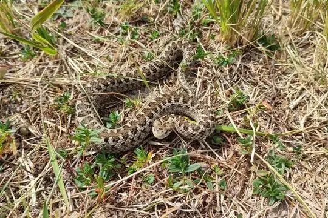

Snakes of Hungary
7 snake species are recorded in Hungary in SnakeList: 1 venomous and 6 non-venomous, from 2 families.
- 7species
- 1venomous
- 6non-venomous
- 2families
Species
Showing 7 species
 Aesculapian SnakeZamenis longissimus
Aesculapian SnakeZamenis longissimus Dice SnakeNatrix tessellata
Dice SnakeNatrix tessellata Grass SnakeNatrix natrix
Grass SnakeNatrix natrix Large Whip Snake (caspius)Dolichophis caspius
Large Whip Snake (caspius)Dolichophis caspius
Meadow ViperVipera ursinii- Known from fossilsNatrix longivertebrata
- Known from fossilsZamenis hungaricus
No snakes in Hungary match.
Hungary’s snakes in numbers
- Families: Colubridae 6, Viperidae 1.
- 1 is recorded in no other country in SnakeList: Zamenis hungaricus.
- 2 are extinct or known only from fossils.